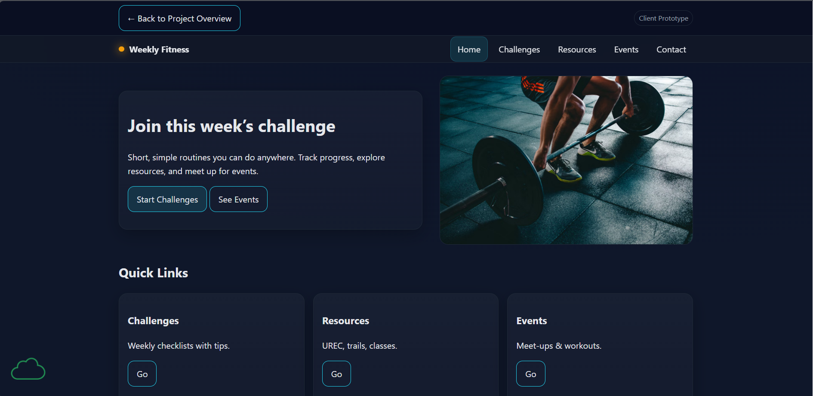

General Requirements
- Your submission must link directly to the page being reviewed.
- No spaces or uppercase letters in file or folder names.
- Files must follow clean naming conventions for images, scripts, and pages.
General Requirements Evaluation
Link to Sogol Maghzian's client page (Click image below)
All files have followed a clear naming convenction as well as styles and images. There where no spaces in files for folder names and the links in the spread sheet where connected to the correct place.
Design Standards
Contrast & Readability
- Font sizes must be readable.
- Contrast should make text easy to read for all users.
Stylesheets
- Use the site’s shared stylesheet unless the assignment requires a unique one.
CRAP Principles
- Contrast: Make important elements stand out.
- Repetition: Reuse colors, spacing, fonts, and layout patterns.
- Alignment: Everything should line up cleanly.
- Proximity: Related items should be grouped together.
Design Standards Evaluation
Contrast & Readability Evaluation
For the Contrast everthing is very easly visable and easy on the eyes. All the colors are picked well with good readability. There is not much for me to add to the section it is very well done.
Stylesheets Evaluation
For the style sheet it is all in one called site.ccs in the client folder. I believe that it should be in the styles folder but what you did is probley a better way to have them sorted.
CRAP Principles Evaluation
CRAP principles again the contrast it very well done everthing is easy to read and see. Repetition is also very well done with everthing being in one style sheet it is easer to matain that. Alignment everthing is places well with in the pages the only thins that I would change are the weekly challenges to have it centered as well are the weekly fitness video on the home page. Proximity all related items are next to eachother making it easy to understand what goes with what.
Page Structure Requirements
- Each page must include:
- Header
- Main area
- Footer
- (Optional) Navigation between header and main
-
Header:
- Contains site/brand name in an <h1>.
- Homework pages use: Student Name • Course ID • Course Name.
- Branded pages use the business/brand name.
- Do NOT include page name in the header.
- Main: Must begin with the page title in an <h2>.
- Every page must include a consistent brand tagline somewhere.
Page Structure Requirements Evaluation
All pages have a Header Main and Footer and a Navagation bar the header for each page has the h1 and the h2. It has all the needed critera for the assinment I do not have much to add to this it is very well done.
Footer Requirements
- Includes menu links for the user’s pages.
- Contains HTML validation link/button and must validate.
- Contains CSS validation link/button and must validate.
Footer Requirements Evaluation
The footer has all the correct links.
Assignment-Specific Requirements
Your assignment may include unique requirements. Be sure to create a checklist based on the assignment instructions and verify that each part is complete.
If any part of the assignment seems to conflict with this checklist, ask for clarification in the class forums.
Assignment-Specific Requirements Evaluation
Website has all the required pages a index and 4 others that are revelent to the client. There is a navagation bar that works and goes to all the other pages and is dynamic. There is CSS and JS in seperate files the css it well done and the site looks professional. Overall the website is very well done and I don't have much to add besides the the weekly challenges and the youtube video alingment.